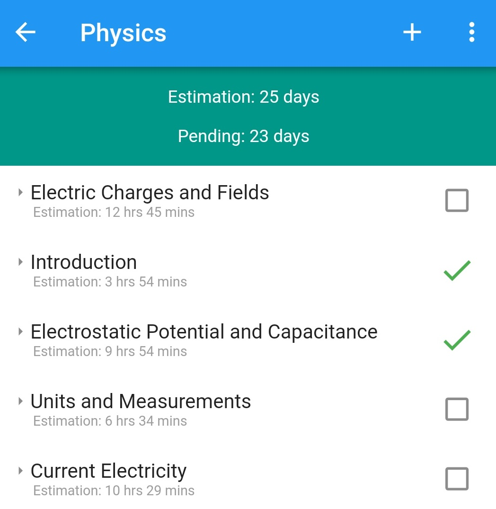

CBSE Revision Plan
Introduction
Thank you so much for visiting this site to understand about the app. This app helps to track daily studies to reach the goal. We believe it will be very helpful for students. The app helps to track and revise subjects. The app is focused only on NCERT syllabus for 11th and 12th standard.
- Version: 1.0.4
- Author: NivedhaTech
- Created: 15 January, 2023
- Update: 15 Jan, 2020
Installation
The app is available only in Android Platform. Get it from the google play store.

-
User has to choose a stream before starting the app. Once the course is selected, user will see a list of subjects and summary showing the progress.
Summary
Shows completion percentage for each chapter and for overall stream.
-
Summary tab shows list of subjects as per the selected stream and percentage completion of each subject. Summary box shows when all subjects would be completed and percentage of completion across all subjects.
-
If all subjects cannot be completed within target date, Summary box will be shown in red colour. You can change settings, adjust estimations to make sure to complete all subjects within specified date.
Subject View

-
Lists all chapters and their topics. These are taken directly from NCERT book.
-
Shows estimated days to complete the subject.
-
Complete a topic by clicking on a checkbox. If you mistakenly mark a chapter as completed, click on (tick) icon to mark it as incomplete.
Menu
-
By default, completed chapters are not shown. You can toggle this using 'Show Completed Topics Also'.
-
By default, only chapters are shown. You can expand a chapter by clicking on a chapter name. You can also show chapters with topics by using the menu 'Show Chapters with subtopics'.
-
Sort chapters by long pressing a chapter and move it to the desired location.
Topic Management
-
Create a topic inside a chapter by clicking '+' icon. Creating a chapter is not possible.
-
Change estimation of a topic. By default estimations are derived using number of pages for that topic.
-
Delete a topic.
Day Plan
Automatic generation of revision plan for a day
-
Topics are added to each day that can be covered in a single day. This plan goes till the target date.
Topics are shown in the following order.
-
Show topics that are completed today
-
Show topics that are pre-selected using priorities tab
-
Show topics in the sorted order
-
Priorities
Chapters can be prioritized based on need like a test, revise week chapters.

-
Select each subject and then select topics that should be prioritized
-
Once prioritized topics are completed, then those topics will not be shown as prioritized
Settings
Change parameters to monitor if progress is sufficient to complete all topics within the target date
-
Each parameter should be self explanatory.
If the estimated date falls after the target date, then Warning will be shown. You can change settings to bring estimated date within the target date.
You can also click 'Update' button to change estimation for all topics. But do this only as the last resort.
Tips
Provide few tips for students and also has links to start from beginning.
-
This tab provides useful tips for preparation.
-
Reset app to original state - Use this to reset all data and start from beginning. This can be used for different examinations.
-
Change Stream - Streams can be changed, this will not affect any data, you can always come back to the preferred stream.
FAQ
A FAQ is a list of frequently asked questions (FAQs) and answers on a particular topic.